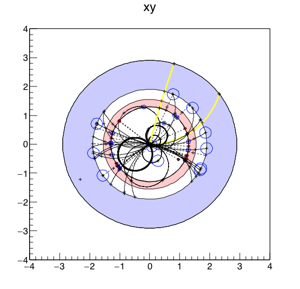
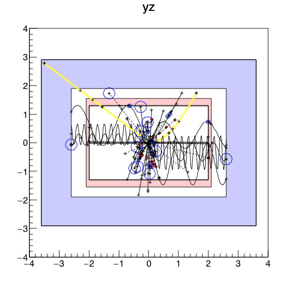
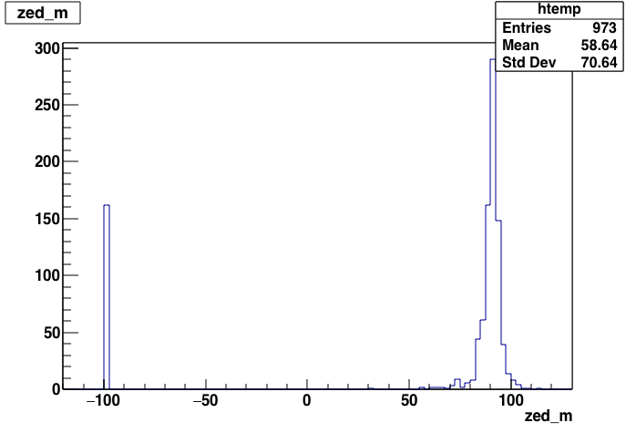
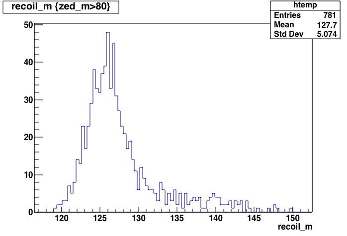
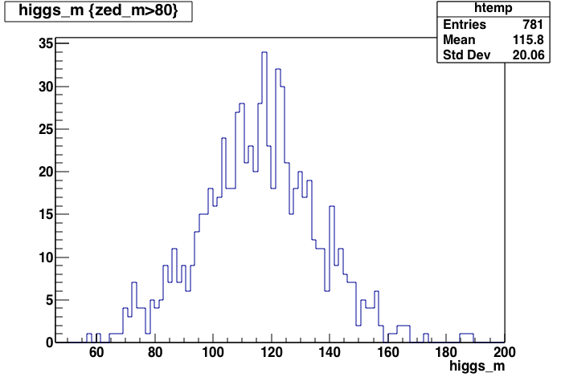
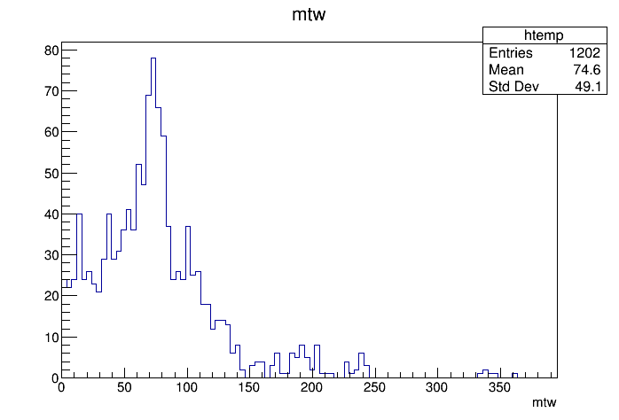

Contents:
If you want to get started fast with the analysis of fast-simulated events, you’re at the right place.
We currently support two different approaches for fast simulation, Papas and Delphes. For now,
However, ultimately, all users are encouraged to try both fast simulations and to compare the results.
An analysis ntuple will be produced with heppy, a simple modular event processing framework for high energy physics.
source /afs/cern.ch/exp/fcc/sw/0.8pre/setup.sh
You will need to source this script everytime you want to use the software.
In this tutorial, you will learn how to:
But first, you will set up a working directory for your analysis.
Create a directory anywhere:
mkdir Workdir
cd Workdir
Get a pythia8 card file to generate ZH events. To download this file, on linux, do:
wget https://raw.githubusercontent.com/HEP-FCC/fcc-physics/master/pythia8/ee_ZH_Zmumu_Hbb.txt
On MacOS, do:
curl -O https://raw.githubusercontent.com/HEP-FCC/fcc-physics/master/pythia8/ee_ZH_Zmumu_Hbb.txt
Get the heppy configuration file for a ZH analysis:
cp $HEPPY/test/analysis_ee_ZH_cfg.py .
Here, we decide to use the standalone fcc-physics package to generate events instead of FCCSW. The advantage of the fcc-physics package is that it is supported for several operating systems, and in particular for mac os X and linux while FCCSW only works on lxplus. In other words, you could use fcc-physics to generate events on your notebook. That being said, it is of course possible to generate events with FCCSW.
Generate ee to ZH events with Z to mumu and H to b bbar:
fcc-pythia8-generate ee_ZH_Zmumu_Hbb.txt
You should obtain a file ee_ZH_Zmumu_Hbb.root written in the
FCC EDM format. Let us open it and check the contents:
root ee_ZH_Zmumu_Hbb.root
events->Print()
You’re getting a list of the available collections. You can use root to draw the distribution of a variable. For example, the distribution of the charge of the stable generated muons:
events->Draw("GenParticle.core.charge", "abs(GenParticle.core.pdgId)==13 && GenParticle.core.status==1")
exit root:
.q
We are now going to run the papas simulation and to build an ntuple with meaningful variables for the analysis.
The ROOT file obtained in the previous section contains for each event all generated particles produced by pythia.
In this section we will run an heppy job to: - run papas, a fast simulation that processes these generated particles to produce “reconstructed” particles; - process the papas reconstructed particles and compute various analysis variables; - store these variables in an ntuple written in an output root file.
The heppy configuration file describing these steps, analysis_ee_ZH_cfg.py, is explained here. Just refer to this documentation as needed while following the instructions below.
First, produce the display for the first event:
heppy -i analysis_ee_ZH_cfg.py -e 0
Two ROOT windows showing different views of the event should open:
 
Move to the next event, and print the event content:
next()
print loop.event
You should get a printout like:
Event: 3
{ 'gen_particles_stable': [ Particle :p1841 :17179871025: pdgid = -13, status = 1, q = 1 e = 55.1, theta = -1.14, phi = 0.59, mass = 0.11,
Particle :p1840 :17179871024: pdgid = 13, status = 1, q = -1 e = 50.2, theta = 0.56, phi = 2.35, mass = 0.11,
Particle :p1962 :17179871146: pdgid = 2112, status = 1, q = 0 e = 16.6, theta = 0.01, phi = -1.89, mass = 0.94,
Particle :p1849 :17179871033: pdgid = 321, status = 1, q = 1 e = 12.9, theta = 1.05, phi = -0.27, mass = 0.49,
Particle :p1961 :17179871145: pdgid = 22, status = 1, q = 0 e = 11.2, theta = 0.03, phi = -1.80, mass = 0.00,
Particle :p1900 :17179871084: pdgid = 22, status = 1, q = 0 e = 5.9, theta = 1.18, phi = -0.42, mass = 0.00,
Particle :p1892 :17179871076: pdgid = -211, status = 1, q = -1 e = 5.1, theta = -0.57, phi = -2.08, mass = 0.14,
Particle :p1867 :17179871051: pdgid = 211, status = 1, q = 1 e = 4.7, theta = -0.03, phi = -1.80, mass = 0.14,
Particle :p1925 :17179871109: pdgid = 22, status = 1, q = 0 e = 4.5, theta = 0.43, phi = 0.87, mass = 0.00,
Particle :p1935 :17179871119: pdgid = -2212, status = 1, q = -1 e = 4.4, theta = 0.01, phi = -1.70, mass = 0.94,
'...',
Particle :p1902 :17179871086: pdgid = 22, status = 1, q = 0 e = 0.1, theta = -0.28, phi = 2.41, mass = 0.00],
'higgses': [ Resonance2 : pdgid = 25, status = 3, q = 0 e = 124.3, theta = 0.65, phi = -0.94, mass = 116.25],
'higgses_legs': [ Jet : e = 66.8, theta = 0.87, phi = 0.63, mass = 39.62, tags=,
Jet : e = 57.5, theta = -0.28, phi = -1.73, mass = 26.31, tags=],
'rec_particles': [ Particle :p1969 :17179871153: pdgid = -13, status = 1, q = 1 e = 54.8, theta = -1.14, phi = 0.59, mass = 0.10,
Particle :p1971 :17179871155: pdgid = 13, status = 1, q = -1 e = 51.4, theta = 0.56, phi = 2.35, mass = 0.11,
Particle :r2445 :21474838925: pdgid = 211, status = 1, q = 1 e = 12.8, theta = 1.05, phi = -0.27, mass = 0.14,
Particle :r2417 :21474838897: pdgid = 22, status = 1, q = 0 e = 11.2, theta = 1.33, phi = 1.39, mass = -0.00,
Particle :r2442 :21474838922: pdgid = 130, status = 1, q = 0 e = 8.2, theta = 0.01, phi = -1.89, mass = 0.50,
Particle :r2398 :21474838878: pdgid = 22, status = 1, q = 0 e = 7.5, theta = 1.17, phi = -0.42, mass = 0.00,
Particle :r2403 :21474838883: pdgid = 22, status = 1, q = 0 e = 7.5, theta = 0.42, phi = 0.87, mass = -0.00,
Particle :r2414 :21474838894: pdgid = 130, status = 1, q = 0 e = 6.0, theta = -0.40, phi = -0.68, mass = 0.50,
Particle :r2440 :21474838920: pdgid = -211, status = 1, q = -1 e = 5.0, theta = -0.57, phi = -2.08, mass = 0.14,
Particle :r2416 :21474838896: pdgid = 22, status = 1, q = 0 e = 4.9, theta = -0.61, phi = -2.03, mass = -0.00,
'...',
Particle :r2422 :21474838902: pdgid = 22, status = 1, q = 0 e = 0.3, theta = 0.33, phi = 1.81, mass = 0.00],
'recoil': Particle : pdgid = 0, status = 1, q = 0 e = 133.8, theta = 0.46, phi = -1.30, mass = 123.97,
'zeds': [ Resonance2 : pdgid = 23, status = 3, q = 0 e = 106.2, theta = -0.46, phi = 1.84, mass = 93.44],
'zeds_legs': [ Particle :p1969 :17179871153: pdgid = -13, status = 1, q = 1 e = 54.8, theta = -1.14, phi = 0.59, mass = 0.10,
Particle :p1971 :17179871155: pdgid = 13, status = 1, q = -1 e = 51.4, theta = 0.56, phi = 2.35, mass = 0.11]}
Locate the zed. If you have none, call next() and
print loop.event until you do. Check its mass. Then, locate the
recoil (momentum of the particles recoiling against the zed), and check its mass.
Exit ipython:
quit()
Process the whole input file:
heppy OutDir analysis_ee_ZH_cfg.py -N 1000
For your analysis, you will be able to use parallel processing, either on a multicore machine or on the CERN LSF cluster.
You get an output directory OutDir . Check its contents and the
contents of its subdirectories. In particular, the following root file
contains an ntuple with the variables we need:
OutDir/ee_ZH_Zmumu_Hbb/heppy.analyzers.examples.zh.ZHTreeProducer.ZHTreeProducer_1/tree.root
Open the root file containing the ntuple in root:
root OutDir/ee_ZH_Zmumu_Hbb/heppy.analyzers.examples.zh.ZHTreeProducer.ZHTreeProducer_1/tree.root
Make a few plots:
reconstructed Z mass:
events->Draw("zed_m")

recoil mass:
events->Draw("recoil_m", "zed_m>80")

dijet mass (note that jets have not been calibrated, using raw jets here):
events->Draw("higgs_m", "zed_m>80")

Please refer to the heppy documentation
In this tutorial, you will learn how to:
But first, you will set up a working directory for your analysis, please folow Installation
Start by installing FCCSW if not already done. If FCCSW is already installed, go into the FCCSW directory:
cd PATHTOMYFCCSW/FCCSW
If FCCSW is not initialized:
source ./init.sh
Now you are ready to produce 100TeV ttbar events with Pythia, process them through Delphes and store them in the FCC-EDM:
./run gaudirun.py Sim/SimDelphesInterface/options/PythiaDelphes_config.py
you should obtain a file called FCCDelphesOutput.root.
This example will run 100 events by default. To have more events for plotting purposes, you can increase this number or use files that have been already produced and stored on eos (see next section).
With this file you are now ready to run the analysis framework heppy.
If not already done install the heppy package Installation Edit the ttbar example of heppy:
heppy/test/analysis_hh_ttbar_cfg.py
and use the file you produced running FCCSW previously
FCCDelphesOutput.root in the files list in line 13. If
you skip this step, the example will use files already produced and stored on eos, so
you will need to setup eos:
export EOS_MGM_URL="root://eospublic.cern.ch"
source /afs/cern.ch/project/eos/installation/client/etc/setup.sh
Now you are ready to run the ttbar example:
cd test
heppy myoutput analysis_hh_ttbar_cfg.py
You get an output directory myoutput . Check its contents and the
contents of its subdirectories. In particular, the following root file
contains an ntuple with the variables we need:
myoutput/example/heppy.analyzers.examples.ttbar.TTbarTreeProducer.TTbarTreeProducer_1/tree.root
Open the root file containing the ntuple in root:
root myoutput/example/heppy.analyzers.examples.ttbar.TTbarTreeProducer.TTbarTreeProducer_1/tree.root
Make a few plots:
reconstructed W leptonic transverse mass:
events->Draw("mtw")

The file
myoutput/example/heppy.analyzers.examples.ttbar.selection.Selection_cuts/cut_flow.txt
contains a cut flow
Counter cut_flow :
All events 10000 1.00 1.0000
At least 4 jets 8170 0.82 0.8170
At least 1 b-jet 7153 0.88 0.7153
Exactly 1 lepton 1303 0.18 0.1303
MET > 20GeV 1202 0.92 0.1202
The first column represents the cut, the second one the raw number of events, the third one the efficiency of the cut, and the last one the overall efficiency.